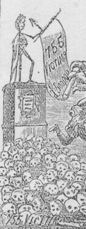

Le piédestal de la statue royale étant terminé, on y plaça hier, devant un grand concours de peuple, la statue du Roi George second.
Chronique de Jersey 9/1/1819

Les îles de la Manche n'ont encore que deux statues, l'une à Guernesey, du «prince-consort»; l'autre à Jersey, qu'on appelle le Roi Doré. on la nomme ainsi, ignorant quel personnage elle représente et ne sachant pas qui elle immortalise. Elle est au centre de la grande place de Saint-Hélier. Une statue anonyme, c'est toujours une statue, cela flatte l'amour-propre d'une population, c'est probablement la gloire de quelqu`un. Rien ne sort plus lentement de terre qu'une statue, et rien ne pousse plus vite. Quand ce n'est pas le chêne, c`est le champignon. Shakespeare attend toujours sa statue en Angleterre, Beccaria attend toujours sa statue en Italie, mais il paraît que M. Dupin va avoir la sienne en France. On aime à voir ces hommages publics rendus aux hommes qui honorent le pays, comme à Londres, par exemple, où l'émotion, l'admiration, le regret et la foule en deuil ont été crescendo aux enterrements de Wellington; de Palmerston, et du boxeur Tom Sayers.
Victor Hugo L'Archipel de la Manche
Gough, in his edition of Camden’s Magna Britannia, says it is a statue of George II. Other accounts state that it is of Charles II, but it is generally reported to be neither, but that it was preserved from a wreck, and placed there merely as an ornament to the Square.
Guide Baker 1839
...its central regions are embellished by a rusty green statue (said to be) of George II, the work of Heaven knows whom and obtained the gods know where, in the fantastic attitude of a ballet master...
We must premise that an attempted subscription among the patriotic town-habitans for the purpose of regilding the same statue failed, the writer of the epigram feigns to have overheard the ensuing consequent midnight conversation between it and the local legislature.
The States to the Statue
Artistic glory of the Isle we sway!
The Statue to the States
Great States of Jersey! Not my outside rust
Guide to Jersey Kandich 1842
...not forgetting the dirty figure in the attitude of a ballet master, said to be a statue of George II., but as like as a pea is to an oyster.
Handbook to the Channel Islands Francis Coghlan 1843
The Royal square comes next, with its weekly meetings, where political coteries agitate, in open air, their most important questions. In the middle rises a statue that resembles nobody, that has not been placed upon its pedestal by any motive of reminiscence, respect, or glory; a dull monument without a name or a date, which has not even the merit of execution. Stupid and vain parody which has usurped the place where Pierson fell, bravely defending his flag, and which rises more insignificant than a rough stone, where the statue of the hero ought to stand proud and alone!
Jersey As It Is F. Robiou de la Trehonnais 1844
Ensuite, tournant à gauche, et laissant à droite la librairie francaise et étrangère de Mme. Falle, on arrive dans Royal Square, la place Royale, joli promenoir de granit où les yeux sont tout de suite attirés par une figure qui n' est sans doute la statue de personne, et qui se tient là, tête nue, armée de toutes pièces, sous le nom prétendu de George II, pour rappeler aux Jersiais qu'il y a cent ans, à-peu-près, un M. Gosset obtint à ce prix des Etats de leur île la permission de faire boucher une ruelle qui donnait alors sur cette place et sert aujourd'hui d'entrée à l'hôtel anglais de l'Union, Union Hotel. Cette statue, parfaitement ridicule, trouvée, dit-on, par un corsaire à bord d'un navire espagnol et qui rappelle à s'y méprendre, pour l'attitude et la valeur artistique, les hommes et les femmes en bois que l'on met à l'avant des vaisseaux, fut inaugurée le 9 juillet 1751, par les autorités civiles et militaires, au bruit du canon et de la mousqueterie, aux fanfares des trompettes, aux hourras des bourgeois. Elle était encore dans son beau et toute dorée trente ans après, quand Rullecourt, un instant vainqueur, ordonna de la respecter. Un morceau fort respectable, en effet ! Pourquoi laisse-t-on ainsi au coin d'honneur de la ville cette caricature inconnue? Eh quoi, les Jersiais ont Vace, l'admirable Robert Vace, le poëte de la conquête, l'Homère des Normands; ils ont les Carteret qui furent des héros, qui leur donnèrent vingt deux baillis, dout deux chevaliers, quatre baronets, trois comtes et six barons ; ils ont Rollon, si bon leur semble, Rollon de qui vient leur liberté, Rollon qu'ils invoquent encore comme un chef, comme un père, et ils s' en vont mettre là une chose sans nom, sans date, sans style! ..... George II, a-t-on dit; et quand ce serait? Qu'est-ce donc que George II a jamais fait pour cette île?
Au pied de la statue est une pierre où se font les publicalions légales : la promulgation des lois, décrets, ordonnances ; l'annonce de la paix et de la guerre. A gauche est la Cohue, que l'honnête figure semble montrer du geste, comme ces mains ayant un doigt étendu, que l'on peint sur les murailles pour indiquer la loge du concierge ou le débit de tabac.
Souvenirs de Jersey Auguste Luchet 1846
Nous voyons avec plaisir que l’on occupe en ce moment des préparatifs nécessaires pour dorer la statue de la Place-Royale, et pour récrépir ou repiquer les pierres du piédestal. On nous assure que cette double opération doit coûter 15 liv. st., qui seront payées au moyen de souscriptions volontaires.
Chronique de Jersey 29/8/1846
La statue de la Place, fraîchement dorée, fut découverte hier matin et exposée aux regards du public. Elle produit maintenant un fort bel effet et peut être considérée comme un ornement réel à la Place.
Chronique de Jersey 2/9/1846
Visite de Sa Majesté la Reine Victoria et de Son Altesse Royale le Prince Albert.
...Arrivée sur la Place-Royale, en passant par Vine-street, où il y avait également un arc de triomphe surmonté d’une couronne, Sa Majesté a attiré l’attention du Prince à la statue, et Son Altesse Royale s’est aussitôt découvert par respect pour la statue d’un des ancêtres de Sa Majesté.
Chronique de Jersey 5/9/1846
Click for full picture - Clyiquez pouor l'portrait entchi
The freshly-gilded statue on its newly-chiselled pedestal....
Gosset The Royal Souvenir of the Queen of England's Visit to Jersey Sept. 3rd 1846
There is a statue at the upper end of the Square which passes for one of George II though doubts are entertained on the matter...
The statue is gilt and in a Roman dress, but is said to be of lead, with a new Head which was fitted to its bust, when it was allowed to assume the name of George II. That head is not unlike those on the coins of that sovereign.
Historical Sketch and Guide to Jersey Rev. E. Durell 1847
Ses premiers pas se dirigeront vers la Place Royale, au haut de laquelle se voit une statue en bronze doré élevée sur un piédestal de granit indigène. Cette statue, qui a été placée là pour représenter un des monarques anglais George II, a le front ceint d'une guirlande de laurier, et le bras droit tendu. Son costume rappelle celui des empereurs romains.
Le Guide du voyageur français à Jersey De la Croix 1851
Here we are in the Royal Square. In the centre stands what is supposed to be a statue, of what, or to whom, there seems to be some diversity of opinion among the Jersey people themselves, so we had better say little about it.
The illustrated Guide to Jersey by a Two Years Resident 1862
In the Royal Square, on a stone pedestal, stands a statue, which some say was intended to represent George the Second, others Charles the Second; but which is also asserted to have been a waif from the wreck of a vessel, picked up on the coast by chance, and installed as "a central ornament" to the town.
The Island of Jersey Falle 1857
Ce qu'il y a de vraiment laid en fait d'art à Jersey, c'est la chétive et ridicule statue en bronze doré de George II, sur la Place-Royale
Chronique de Jersey 21/6/1862
Nearly opposite, on a square granite pedestal, is a Romanesque statue, christened by the title of GEORGE II. It stands on the site of the old Market Cross, or "High Stone," and it is said to have been found among the débris of a stranded vessel, and to have been intended for a representation of some late Roman Emperor. The Jersiais, however, were very hard up in the statuary line, so they caught eagerly at this specimen, And in July, 1751, had a grand festival, christened it by the name of the reigning monarch, and are now as proud of their solitary effigy as the tailor was of his hunch-backed child.
The Gossiping Guide to Jersey J. Bertrand Payne 1863
This square contains a most unclassical statue, in lead, erected on a pedestal of Jersey granite. It has something of the appearance of a roman or grecian warrior, and is intended to represent the second George of England.
Perrot’s Guide to Jersey George Messervy 1866
Nouvelle Chronique de Jersey 10/11/1866

A detail from the cartoon
La Statue
La pouorre Statue dans l'Vier Marchi,
Sale, laie, jaunâtre, couleur d'mortchi
Ah! dites mé donc, tchêqu'oull'a fait
Qu'jamais personne n'en a pitchait.
'L'faudrait bain mus s'en dêbâté,
Qu'd'la laissi là dans san pité;
La vendre à tchique bouan campagnard
Qui la pïyan'tait dans san hautgard.
Car, bain pitchie sus l'haut d'un tâs,
Ou f'zhait un fameux épeurhâs;
'L'n'y'a pas moësson qu'éthait quothage
D'allé jamais l'y faithe ombrage.
La vendre! Ma fé. Et bain tant mus,
Tandi qu'n'ou peut post bills dessus;
Pour ch'la ou sert principal'ment
Mé dit tchitchuns à chu moment.
S'ou sert. Allons; faut la laissi,
Mais pourtchi pon la rabiyi;
Oulle est camprie! - J'cré qu'il est temps
D'en faithe. Tchêqu'ou zen dites bouannes gens?
Une quoche d'bïan pïon l'y f'thait grand bain
I'm sembïe cou l'éthait l'air pus sain:
Ou même n'ou pouorrait la bïanchi
La caux est à si bouan marchi!!
Jersey Cabbage Stalk
Chu 8ème Mai 1869
Jersey has just been made the scene of a practical joke. At an early hour yesterday morning the gilded image surmounting the well-known pedestal in the Royal Square was found to have received a coating of tar and feathers. Tarring and feathering a statue does not at first sight seem a very promising form of joking, and, in the case of this kind of public monuments generally, the feat would be pronounced to be simply a mischievous damage to public property, without a particle of the ludicrous to redeem its stupidity. but in this instance the attempt at a joke, - which it presumably is, - has been entirely successful. That is to say, it has affected everybody concerned with a sense of amusement or of superficial anger or with a mixture of both. Most people who came across the statue in its new guise gave way, after the first surprise, to a more or less hearty laugh; while others, we fancy they were very few, seem to feel only resentment at what is esteemed a public outrage; but many, it is to be feared, on hearing the news, went to see the sight for the express purpose of laughing. On the whole, we think the monument has considerably outbalanced the ludicrous; and the perpetrators of the feat may be considered to have accomplished all they could have immediately intended.
The feat, however, is one which is not allowed to bring glory to the doers; and it is probable that, if they should be caught, the little comedy of which they are the authors would have a tragic ending. The minor officialism of the Island, as we infer by the tone of certain of our contemporaries who affect the French language is disposed to take the joke au sérieux and something more; and the minor officialism is strong enough to make itself very unpleasant to anybody who through a breach of the law happens to fall into its hands.
...They are certainly very indiscreet strangers who presume to take liberties; and a Londoner had better destroy the inimitable work of LANDSEER in Trafalgar Square, if he is beset with a rage of the kind, than injure the gilded block in the Royal square of St. Helier's.
British Press and Jersey Times 20/9/1876
Nouveaux ornements
Samedi matin, quelques amateurs d’effets artistiques, avaient orné la statue qui repose sur son piédestal au milieu de la Place-Royale, des attributs et décorations portés par les Good Templars. Grand cordon ou écharpe avec les lettres sacramentales I.O.G.T., médaille en or (?), à la main droite de la statue étaient pendues une théière, une tasse et une soucoupe. Une foule d’admirateurs de ce nouvel effet artistique étaient à contempler cette addition à notre statue, lorsque le policeman Gruchy accompagné du Gardien de la station, porteur d’une échelle, le tout commandé par un des plus aimables Centeniers intervinrent sur les lieux. L’échelle plantée, le policeman Gruchy au péril de sa vie, monta bravement et arracha les ornements du pauvre prince, ainsi dépouillé sommairement des marques de sa tempérence. Le Connétable en avait ainsi ordonné.
Nouvelle Chronique de Jersey 22/10/1873
In 1846, in honour of Her Majesty’s visit the statue was coated with gilt, but since then nothing has been done to it, and its neglected condition has become an eyesore if not a disgrace.
Tourist’s Guide to the Channel Islands Benjamin Clarke 1879
La Statue de la Place-Royale
Si la statue, qui en ce moment déshonore la Place-Royale par son état d’affreuse malpropreté, est un souvenir élevé à la mémoire de quelque souverain aimé, respecté, regretté, à qui incombe le soin de rendre cette statue digne de rester sur un piédestal at au milieu d’une place publique? — Si cette statue est simplement un objet de fantaisie placé sur ce piédestal faute de mieux; que ne la relègue-t-on pas dans quelque coin et ne la remplace-t-on pas par celle du Général Don ou n’enlève-t-on pas le monument entier? — Dans tous les cas, aussi longtemps que la statue reste ne devrait on pas l’entretenir d’une manière décente! — Nous faisons un appel à ceux qui ont le soin de nos monuments publics; un peu de peinture bronzée ou dorée ne coûterait guère.
Nouvelle Chronique de Jersey 12/6/1880
Le Centenaire Peirson...
...Le monument du Roi George est pour ainsi dire renouvelé et la statue est dorée (nous eussions préféré le bronze). Le monument Le Sueur est orné de panoplies et de lampions aux couleurs variées...
Chronique de Jersey 8/1/1881
...La Statue, qu’on assume représenter le Roi George II, en Empereur Romain, a été redorée de la tête aux pieds et le piédestal en pierre sur lequel se dresse le Roi, a été lavé, brossé, nettoyé, gratté et remis à neuf.
Nouvelle Chronique de Jersey 8/1/1881
Unne Compieinte
L'autre gneit, j'avais étais sus le spree,
En m'en revenant, je fut prins fâlhi,
Jé tchi en un lopin, dans l'Vieir Marchi,
La carre du "Pizamide" m'fit croizi les pids,
Je tchi là, j'y passi unne partie d'la gneit,
A la pièche d'être quochi à man yiet;
En me rêvilliant, je fut ben ravi
D'entendre l'Ruoi, ne v'chein coumme y pâli!
L'Anmin Ph'lip, laissiz-mé la ouq' je sis pliaichi,
Mé, tchi sis votre Ruoi Doré du Vier Marchi,
Dans tuous les pourtraits
Qui en ont tai faits,
Ou mé verrais sus ma "Pizamide" jutchi,
Même dans l'pourtrait d'la Bataille de Jerri.
Tchi vente ou plieuve, j'ai le bâton en haut,
Et je me tcheins d'aplomb étout coumme y faut;
Le monde en ont dit ben des sortes sus mé,
Que j'étais la "Figure-Head" de l'Arche de Noé!
J'ai 'tait aitou unne fais vilain'ment quoiffi,
Et coalterrai aitou, quique médjiant pendi
Des vieirs "knockeurs" minchis au but de man bâton,
Pour faithe la Police venin en guédon;
D'ches farceurs là j'ai tai la dupe, mais j'y tcheins,
Nou devrait, tout coumme, respecté les anciens,
Car je sis ben vi, et ma puoure mémoithe
Mé tromp'theai, si fallait dith' le nom d'man pèthe!
J'en ai veu de ben des sortes dans l'Vieir Marchi,
Les Gazettes vos l'ont pet-être ben dit;
Ah nen! jamais
Nou n'mé f'ra oublié les Procliamations de Paix,
Un Centenaire et des fêtes rareilles,
Quand les illuminations faisiaient merveilles.
Gaz, Lanternes Chinoises et lampions,
Chounna faisait l'extase des piétons,
"Hibou" de dan vivant m'counnaissait ben,
Quand j'y pense, j'en lerme pour man buoun cat-huen!
Mais enfein, l'Anmin Ph'lip, ou n'êtes pon mauvais,
Laissis mé là ouèque je sis en paix,
Je ne fais pon grand ma, si je n'sis pon grand'chose.
Tout dans chu monde n'est pas couleur de rôse...
Et dans tout le temps passai, ah! toutes les loies
Que j'entendais.
Ach'teu les Dénonciateurs vennent auprès d'mé
Je n'les comprends pon, y n'font que barbélueuté,
Devant être quémenchis
Y voudraient être finis.
J'en sis tout jaûne, et habits et pé,
Je vos en prie ayiz pitchi de mé;
Voudraît'ous rempleichi, car chest là vot pensaie,
Un "Ruoi Doré" par unne "Reine Adorée"?
La jalousie n'entre pon
Dans man chervé d'pliomb,
Mais si vos manque unne pliaiche pour vot' statue,
Jé vos ditheai en deux mots men idaie là-d'sus:
Dans la Pathad' yia unne masse de granit,
Qu'a tai machonnaie par Mait' Charles ed Gruchy,
(Chest tout du Mont-Mado, bel et fein'ment pitchi),
Yia du run là-d'sus
Pour deusse-trais statues!!
Fichiz-mé vite d'côtai les deux êsmânues
Tchi sont là, yieunne à gauche l'autre à droite
(Chest de fé fondu, que nou dit tchi sont faites),
Car tout Doré que je sis, chest là men idaie
Que chutte statue là n'en serait qu'amendaie,
Et pis sans faithe un muouché de frais,
Escoutais man plian et ou zallais vais.
Je devtheais ben savé, étant statue mémême,
Sans dutout savé dé quicq' je sis l'embième...
Les deux espeurats unne fais
Fliaintcdhis ben hien hors de la vaie,
Dévalais le Général de oué qu'il est jutchi,
Mettais y vot' belle statue à l'rempleichi!
Mais pour quant ès deux êmânues,
Ou savais bein qu'a la "Sambue,"
Yia un roqui, nou l'appelle,
Je cré, du nom de "La Selle,"
Nou puourrai, par ornement,
Plieichi, avec un barri ou deux de chiment,
(S'ils 'taient peints avec du Phosphorus paint, ben bright,
Y serviraient pet-être ben, de leading light.)
Ches deux espeurats là, hieun sus chaque pointe,
Y paraîtraient ben, n'en ayis pas de crainte!
Si à "Rocqberg" yia oquo quicq' chorchi,
J'vos gage, ma fingre, tchi s'ra ben fi
De s'trouvé quicq' fais en si buounne compangnie.
Coumme les deux inmages, bel et ben vernies
(Y s'raient, hélas ben vite couertes de bainies.)
Votre "Pédestal" cliairgi de chein qu'était d'sus
Ne v'la, ma fé, du reun pour trais statues!
Mettais ach'teu, la Reine drait au haut;
Car chest là, pour seure, la pliaiche tchi l'y faut -
Ermettais mé, le Général sus yieun des bord
A droite ou à gauche, nou n'l'y f'ra pon d'tort,
Et avec les sous qué nou puourrait collecté,
Pour unne belle pierre pour pouvé monté
La belle statue, dé tchi ou vos vantais tant;
Acatais n'en yieunne de Pierson, vaut autant
De trais, en faith' unne buonne; car pour ch'ty là,
Chest ben honteus qué dans not' île y n'y a
Que deusse trais mots, dans la vieille Eglise
Pour dith' qui perdit la vie. Dans unne crise
Coumme not héros se' trouvi -
Y fit ben sen dévé, et y sauvit Jerri.
Si man plian pouvait seul'ment réussi;
Nou puourrait tout d'même et sans gêne
Crié dé buoun tcheu: "Vive la Reine!"
Vive la memoithe de "Don" et des Grandes Routes!
La chenne du Majeur, tchi mins en dêroute -
Dans ben p'tit d'temps,
Tuous les Normands.
Et pis "Vive de Ruoi Doré" du Vieir Marchi!!
Mousieu Falle ne se gên'nait pon à l'avnin,
Des pierres qui voudraient mettre dans san gardin.
Y n'en dit pon pus long; le jour quémenchant à s'faithe,
Les coqs chantaient... il 'tait temps dé traithe;
J'avais biau être êmervillhy
D'avé ouï lé Ruoi pâlé coumme un Avoca',
I' me fallu ben vite filer hors dé là,
Quoiqué jé m'sentais tout êquochi....
Car j'avais perdu ben du r'pos,
En revnant la gneit de d'vant, des Ecréhos.
Fallait ben oquo tout de même, gabathé,
Jusque dans le fond du Buoulai;
Je fut deux heuthes, à peu près
A m'trainné jusque ès Augrès.
WHA! WHA!!
Nouvelle Chronique de Jersey 21/8/1889
La Crouaix du Vier Marchi
Moussieu l'Esditeu, - Man pèthe, qui fut nai d'vant la
bataille de Gerry, avait oui à s'noncle François que la Crouaix du Marchi 'tait
en granni de la Perruque, et que quand nou mins la Pyramide pour le bouan Roey
Georges daeux, nous mint d'sous la Crouaix pour li servir d'fond'ment... J'sis
mangnière de vier Antiquoeux, qui prends souain d'ses herpins, - mais
j'donnerais oquo bein un vingt siex sous pour aiguir à la r'désenterrer, chute
noble vielle Crouaix! qu'avait tai plaichie au siégièime siècle par les prumiers
qu'resquains qui vinrent ichin avec touos les saints. Ou pouvais métttre mon
nom bas, Moussieu, dans vouot préchaine Gazette, pour vingt-six ou trente-siex
sous, pas pus si vos pliait Moussieu l'Esditeu, car les temps sont bein duairs.
Salut, jouaie et santai, man bouan Moussieu,
Vouot serviteu,
Oméga.
Nouvelle Chronique de Jersey 16/6/1888
Vues de Jersey
(Sonnets sans retouches)
I
La Place Royale (de jour)
Sur un socle banal à la banale stèle
Sur l'asphalte, à l'entour, on voit la clientèle
Si chère aux gens de loi, vaguer; les avocats,
Affairés, prendre langue en faisant les cent pas;
Puis, groupés, des messieurs dont l'importance est telle:
Députés et Recteurs, Juges et Connétables. -
C'est là que, chaque jour, sans trêve et sans arrêt,
On critique les Lois, on blâme quelque arrêt...
Cependant que des chiens, de moeurs fort discutables,
Au pied du monument - et non certe à regret -
S'oublient à des levées de patte insupportables.
II
La Place Royale (de nuit)
Alors que sur tout s'étend la nuit sombre,
On voit là, du sol, jaillir sans encombre
Les fleurs du trottoir fanées, sans attrait,
Offrant leurs faveurs.. et le mal secret
Aux tristes amants raccolés en nombre.
Tel se plaît un faune, en les bois touffus,
Aux mots que, troublés, les amants confus
Murmurent tout bas, soufflant dans l'espace;
Le Roi George, aux yeux de qui tout se passe,
Semble être un heureux satyre à l'affut
Des vices du Temps, dont il ne se lasse.
Sun
Chronique de Jersey 29/1/1898
The Royal Square
To the Editor.
Sir, — I see by your issue of last Saturday that the Defence Committee have acceeded to the proposition of our worthy Constable to allow him to plant some trees in the open place pompously styled Royal Square. I am certain that Mr. Baudains in particular, and the population of St. Helier in general will one and all, duly appreciate this act of condescension on the part of that Committee! It has also been proposed to remove the ugly apology, in gilded lead, of the grinning Dutchman, and to replace it with a statue of our genial and much esteemed Constable. I should certainly be in favour of consigning to a limbo of some sort, that statue, or to the removing of anything that may expose Jersey, or Jerseymen to ridicule, but, in general, statues in painted wood, gilded lead or bronzed cast iron, are very seldom raised to the good, the worthy, the useful, and truly patriotic citizens, during their terrestrial sejour. It is only when they have "shook off their mortal coil" that their virtues become known, and their talents are duly appreciated. Of course there are exceptions. Royalty, and sprigs of Royalty have any amount of statues during their life time, but after their deaths the models are broken up, and very often the statues also. If the old stone cross, or one exactly like it was raised on the spot where the ancient cross stood, that would be a monument worthy of looking upon, it would lead the memory from the present back to the past, and might recall to mind recollections that should never be forgotten.
There has been another hint thrown out, namely, to suppress one of the roads that run through the Square! That is, in my opinion, an excellent idea, but which road? I would not take up the carriage way that passes in front of the Royal Court, but of what use is the one that continues from Vine Street? This road might with very great advantage to the Square be closed to vehicular traffic, from the back of the Guard House to King-street; this would greatly enlarge the Square, and, as it is, it is of more nuisance than of any utility. In fact it is a dangerous outlet, and very often an obstruction to the much frequented part of King-street, and in the part where that street in the narrowest. Now, worthy Constable, as the Defence Committee have accepted one part of your programme, make another effort. Get that bit of road closed against vehicles, take up the wood paving, plant along the middle of that road a row of chestnut trees, get the ugly old statue out of the way, get something to put in its place. Why even Westaway’s fountain would look better, and be much more appropriate than what we have there now, and which our French visitors say is a bad attempt to reproduce the figure of Voltaire; in one word the statue is ridiculous. In that square was fought the Battle of Jersey, and who can imagine what would have been the consequences of that battle had the French been victorious? Near that gilded effigy died the gallant Pierson who fell in that battle killed by a French bullet. It is his statue that should occupy the pedestal on which now stands the leaden resemblance of a Dutch son of Dutch parents. I feel confident that if a subscription was to be set on foot, to raise a monument to the memory of the leader of the army which saved Jersey in 1781, in a short time an amount amply sufficient for that object would be obtained. Then two points would be gained. We could wipe out the stain of ingratitude, and get rid of the ugly shining toy that disgraces the Royal Square.
H. Pelton
Jersey, January 28, 1894
Jersey Times 29/1/1894
To the Editor.
Sir. — The letter of Mr. H. Pelton in your worthy paper on Monday did amaze and amuse me.
This worthy gentleman, who seems never o be satisfied, and one time makes a remark on the Harbour Committee, another time on this and then on that, reminds me of a large warehouse where you find a small quantity of everything, but nothing to be found of one sort for any substantial purpose.
Now, Sir In the beginning of that worthy gentleman’s letter he says :– "It has also been proposed to remove the ugly apology in gilded lead of the grinning Dutchman" etc. etc.
He further states in his letter "It is his statue that should occupy the pedestal on which now the leaden resemblance of a Dutch son of Dutch parents," and further "we would get rid of the ugly shining toy that disgraces the Royal Square."
Now, sir, I find in your worthy Almanac (which no doubt, is the best guide in the Island) on page 62 as follows:– "In conducting the stranger through the streets and roads in this island, it will be well to select a starting point which shall be common to each day’s excursion, say the Royal Square, as being perhaps the most central of all. Indeed, it is from the statue in the Square that all distances are measured on the milestones throughout the Island." Fancy, Mr. Pelton, this ugly Dutchman, and this miserable Dutchman measured the whole lot of you, French, English, Hottentot or anybody. Surely that is more than Von Speyk did with his bravery, or even Admiral De Ruyter, but I expect the same as I often heard "Jersey conquered England," accompanied by the song "Ma Normandie," &c., &c. But Mr. Editor, your almanac further says:— "It has only been recently discovered among the papers of the late Viscount Durell (I suppose a relative of our famous Advocate Durell whose splendid photo you have this year as a well deserved eminent Jerseyman in your almanac) and began as follows:— "On the 9th day of July, 1751, a fine statue of His Present Majesty was erected, at the public expense, in the Square of the town of St. Helier, in the Island of Jersey.
Until 1874 its origin was uncertain, but on the 28th April an official document appeared in the Jersey Times giving details of the ceremony at the inauguration of the statue" Now then, Mr. Pelton, you cannot pelt-on this, and even if it was a Dutchman (pretty or ugly) you must glory in Jerseymen who are not asking who is who? but is he Something? and give honour to whoever deserves it.
Thanking you for the long space I am obliged to take, yours,
D.A. Du Mosch
2, Marine Villas, 31st Jan. 1894
Jersey Times and British Press 31/1/1894
Bref, la Statue Royale est le point de départ où l'on prend les mesures de toutes les routes de Jersey. Elle est historiquement digne du respect de tous les habitants. Les profanes veulent dire qu'un Roi ne doit pas tenir un bâton à la main. Ce n'est pas un bâton que tient notre Roi George II, c'est un rouleau. Ce rouleau c'est l'emblême de l'ancienne charte de nos libertés, aussi le bras étendu le Roi semble-t-il dire à nos pères: "Jersiais, voici la Constitution que le Roi Jean vous a octroyée; je viens aujourd'hui vous la confirmer."
Il y a des gens qui voudraient pousser leur goût de vandalisme jusqu'à abattre cette Statue! Ce sont les ennemis du pays.
Nouvelle Chronique de Jersey 14/2/1894
A STATUE FOR A GIFT OF £300.
To the Editor.
SIR, - Much has been said of late concerning the statue. that adorns the Royal Square, but none of the histories that have been published up to the present, do in any way clear up the mystery? By who, and of whom was it commanded? Where, and when was it ordered ? When was it made ? Who paid for it ? All this wants clearing up before we can bestow upon it the veneration which is due to the august features of such a bright star as was this smiling Dutchman. It is all very well the writing about forty gentlemen patriots, who loved and adored the foreigner King, the calling out 12 men from the fort, and 12 more from the Arsenal, and a few militiamen to shout and rave " Long live King George," and then the drinking of some bottles of wine, but how was this all paid for ? It is stated that the good King gave to the Island £300, towards building the harbour, and that "out of gratitude" the States decided to erect a Statue to his memory. That was indeed a splendid way of showing their gratitude. If every man could have a statue raised to his memory, even in lead and before his death, for the gift of £300 to a charitable or patriotic object, Jersey, and England would be covered with statues, and the price of lead would go up. Now Sir, I do not believe all this. George II had too much need of money for his Dutch wars, and to feed his hungry family of German princes, his German generals, officers and foreign mercenary troops, to say nothing of his love for the bright round pieces, that this gift of the £300 appeared to me improbable. I think Sir, that a seeker after historical truths would have hard work to find such a generous act recorded of this unlettered foreigner? I mean in England, in his own country it was perhaps different. It is a well known fact that after the arrival in England of these Hanoverian, Brunswickian, Dutchmen, they were followed by scores of these poverty stricken. but high bred Teutons and they soon left off dining upon sauer kraut and sausage, to live princely upon English pay - the Bentincks, Schoinburghs, Auvergnes, Schroders &c. But to return to the Statue, not being able myself to unravel the entwined threads of this mystery, I addressed myself to a friend who is attached to the historical department of the Parish of Wapping, near the old stairs! This gentleman is deeply learned in the question of statues, be they of marble, wood, iron, brass, or lead. It is to this gentleman that I am indebted for the following interesting history of a leaden statue. In the year 1745 arrived at Wapping the fine and fast sailing schooner the Maria Therese, of about 140 tons gross measurement, owned by Isadore Vanderheggin, her captain. At the time England was driving a most horrible war on the continent, in order to ensure the throne of Austria to the daughter of Charles the VI, a question of no interest to England, but to which the good king was sending thousands of poor men to continual slaughter, and wasting millions of English gold. The aid to foreign princes, and the expenses of foreign troops in English pay voted in 1845 (sic), amounted to the enormous sum of £1,884,358 sterling. The Maria Therese was discharging her cargo, and England wanted ships, more ships, principally fast sailing schooners, so Captain Vanderheggin signed with pleasure an engagement by which he and his ship entered into the English service until the end of the war. As the Maria Therese was now an English ship, the captain wanted English flags, so he went ashore and took a ramble through the very busy though unfashionable parish of Wapping. When passing down High-street, at the corner of Horse Shoe-lane he stopped at where then stood an immense marine store shop. Vanderheggin entered and was struck with surprise at the sight of a long row of figures, statues of all sorts, sizes and shapes, old figure heads, some new, some old, some bright and shining, others which bore the traces of hard usage. Conspicuous among these was one which, although slightly damaged, appeared to be nearly new. It was not a work of art, but no doubt the fanciful work of "a 'prentice hand." "Phat is dat ?" asked Vanderheggin of the dealer. I don't know, replied the Wapping man, it is of Lead. "Put who is it?" "I cannot say," replied the dealer ; " it is perhaps intended to represent one of the Pharaohs drowned in the Red Sea, or a Grecian General, a Roman Emperor, Prince Rupert." " No, no," exclaimed the little Dutch captain, " dat is not te prince te prince toes not run a front without his casque, and with a crown of radish leaves round his head, and te prince carries a sword in his hand and not a roll of music!" Although they could not decide who the statue was intended to represent they agreed as to the price, and the little captain became its owner, saying " I hope to make some money out of it, but if I do not, it is one goot lump of pallast," for then as now, the old saying had some truth in it "All is fish that comes into the Dutchman's net." The Maria Therese sailed from the Thames on the 1st of October, 1745, made many voyages to the North Sea, carrying men and Stores to our unfortunate army in Flanders and Germany, carrying provisions and stores to our successful fleets, escaping alike the storms of the ocean and the swarms of Privateers; the little captain from the land dykes and swamps smiled a grinning smile when standing near the wheel of his clipper schooner smoking his large China pipe in the month of April, 1748. He was running down channel with a fine breeze, bound for Portsmouth, where be was to take in stores for the Channel Islands, and then on to Plymouth, when Griffiths, an English seaman, a Weymouth man, who was at the wheel, drew the captain’s notice to a sort of three masted lugger kind of a craft, that seemed to be following the schooner. " What dat tree legged ting out dere." " Don't disdain her captain let's hope that this wind will hold on for a few more hours and then we shall be too near Spithead to fear her; otherwise we shall have lodgings to-morrow night in a French port, and no rent to pay." The captain made no reply, looked anxious, breathed out a short prayer, to his patron saint, between short puffs of smoke, took the mate down with him into his cabin, poured out from a large round-bellied bottle two bumpers of usquebaugh, and for the first time uttered aloud his terrible " Got for tam, be shall never have the Maria Therese." It passed, the wind continued fair, and again this " three-legged thing" was baulked of its prize. I say again, for in the captain's report, she had more than once chased the schooner, which was well known to be employed in the King's service. The schooner only stopped three days at Portsmouth, when she again put to sea for the Channel Islands, but not before the look-out at Portsea had signalled, "Not a sail in sight." Having left Spithead at 8 o'clock a.m., the Captain had hoped to have arrived in Guernsey or Jersey early the next morning, but the winds had changed. The Caskets were sighted on the second day from leaving Portsmouth, and glad indeed were the captain and crew when that welcome news was sent down from the masthead; but almost at the same moment came down these words, " Three-masted lugger off the starboard quarter." " Got for tam," roared the captain, " crowd on every stitch of canvas." " Put her straight before the wind, captain," replied the mate. " Do you know these Islands, Griffiths ?', asked the captain of the mate. " I have been 10 times to Jersey but never set foot in any of the other island, but let her run before the wind until we have passed the Casquets, then if daylight holds out and we don't get a pilot I think I can steer the schooner through these waters safely to Jersey, but don't ask me to pass through the Grand or the Petit Ruan, I am not a pilot. The captain gave the orders accordingly, but the wind was falling and no pilot boat hove in sight while the "three legged thing" was visibly drawing nearer to the Maria Therese. The Casquets were passed, then the mate took the wheel and steered boldly for Jersey, so boldly indeed that the pirate lugger seemed to hesitate to follow " Mein Got" exclaimed the poor little Dutchman "vat rocks, vat rocks, and I have tree tousand guiners in my cabin." I should have said that when Captain Vanderheggin had accepted the offer of the English Admiralty to serve them with his ship until the end of the war, he had engaged three English seamen - Griffith I have already mentioned, Cater was an excellent seaman but a most doubtful character, and Walmock. The latter was a man past 50, one who, at sea, and on land had done everything that was bad, had sailed in all seas, in all climes, in every service, and some of the very worst, but he was now an altered man, very religious, sober and hardworking but had conserved his old quaint and somewhat jeering way of speaking so usual with the illiterate people of Scotland ; he gently walked aft, and addressing the chief mate who was steering the ship, said, " Mr. Griffiths if ye keep on this course, ye'l touch the north side o' the island, which is not a canny place to land at, not that ye'l be wanting o' water, but ye’l find more rocks than ye'l care for ; there's a reef called the Paternosters running crossways about two or three miles from the land, and ye are jest steering for um." He said no more, and walked calmly forwards. Effectively a few minutes after the white foam was seen, the schooner was put about, doubled Grosnez, weathered Corbiere, passed Noirmont, and was stretching across St. Aubin's Bay, and when just about to let go the anchor a grinding sound was heard ; it was not a shock, but well all on board knew the meaning of that sound, "Rig the pumps," cried out the Captain; "Ye’d better rig the boats," replied the Scotchmen. The pumps were sounded and gave instant proof that the ship was doomed, but the mate never flinched from his post for one instant. With his eyes sternly fixed upon some object on the Town Hill, he steered straight for the shore, passed all the rocks around the western side of Elizabeth Castle, and when he found the ship sinking under him he gave another half turn to the wheel and went down with the ship. The Maria Therese sank near where is now the G.W.R.C’s shed. The mate Griffiths was the only hand that was lost, nearly all the cargo was saved, and many months after, long after the last timber of the schooner had been washed away, or taken and burnt, the statue of the Egyptian warrior was found, black, bruised, dirty, but there it was; at low water they dug it up, dragged it out of its muddy bed, and got it on shore, where it lay for some time. At length it found a resting place in an old store, a Jersey plumber repaired the injured head, a Jersey artist straightened the nose, the ears, bent up the right leg, and smoothed out the leaves that adorn the head, a Jersey painter employed his talent upon it : then comes back to Jersey, the little Captain Vanderheggin, who declared it was the statue of His Majesty King George II. No one hesitated, no one doubted, none questioned the statements of the cunning Dutchman, but a cry of joy rang out from the lusty lungs of forty gentlemen. The statue was bought, gilded, painted, decorated, and — for the rest read the Jersey papers!
H PELTON.
Jersey Times 6/3/1894
La Statue sur la Place
O Statue adorable d'un grand roi d'Albion,
Un Ami du Beau
Nouvelle Chronique de Jersey 31/3/1897
Le Roi George - M. Holder, le décorateur a commencé à peindre la statue de la Place Royale, en vue d'être re-dorée pour le Jubilé. Pendant la nuit de Mercredi à Jeudi un farceur a décoré la tête de l'illustre monarque d'un chapeau à plumes
Chronique de Jersey 12/6/1897
We this morning had a special private view of the statue of King George II in the Royal Square, which (together with the Royal Arms over the entrance to the Court House) has just been re-gilded by that well-known and talented decorator, Mr. A. Holder (Don-street). The work has been carried out with evident thoroughness and consummate ability, the statue having been scraped bare to the metal, which is apparently a composition of lead and pewter. Seven coats were placed on it, including the last of oil-gilt, and the effect is now very fine indeed. The best English leaf gold, warranted of London manufacture, was used, this having a beautiful burnish, and it should probably wear for fully 10 years. A close view proves the beauty of the statue, which is a very fine casting, without joint in the mouldings of the fingers, the hilt of the sword, the relief breast-plate, the Order of the Garter on the left leg, &c. The deep hollows have all been carefully filled in and a rift mended in the right foot - which is, perhaps, too far back from a purely artistic point of view. The statue, which dates from 30 years previous to the Battle of Jersey, may stand another century. It was draped this afternoon, the scaffolding will be removed on Monday, and it will be informally unwrapped on Tuesday, when the rare excellence of Mr. Holder's work, to which he devoted personal attention, will be manifest by the public at large.
Jersey Times and British Press 19/6/1897

George II after restoration 1999